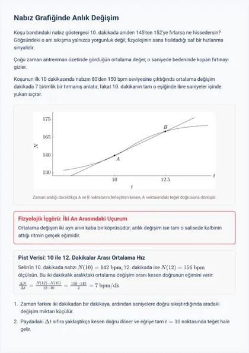
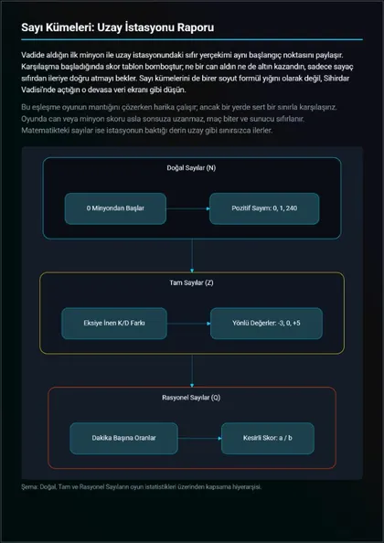
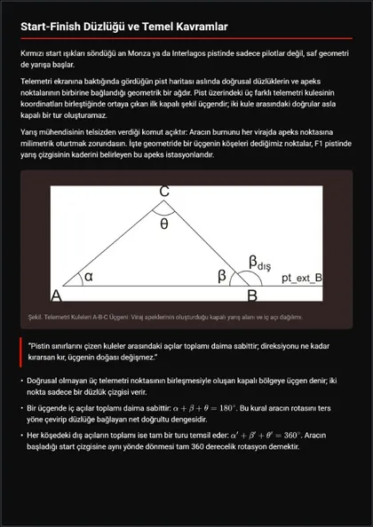
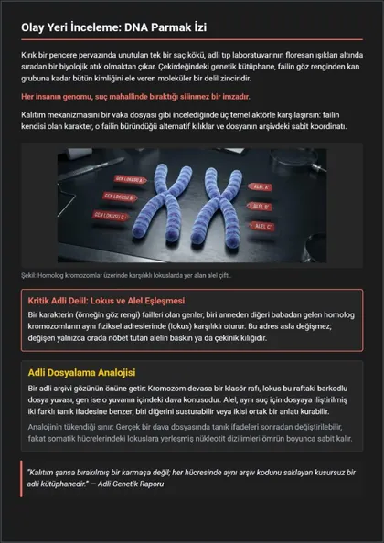

Her görsel, durduğu sayfa için çiziliyor.
Tasvir hazır resim yapıştırmıyor. Her sayfada fikrin ihtiyaç duyduğu görseli seçiyor — grafik, diyagram, geometrik çizim, formül ya da yapay zekâ görseli — ve metinle birlikte sayfaya yerleştiriyor.
-
25
grafik türü
-
17
diyagram türü
-
LaTeX
geometri ve formül
-
AI
sayfa başına görsel
Gerçek dokümanlardan
Hepsi, Tasvir'in tek bir cümleden ürettiği bir YKS dokümanının ilk sayfası.




25 grafik türü
Veri sayfaya kendi ekseni, lejantı ve etiketleriyle gerçek bir grafik olarak yazılıyor; baskıda keskin çıkıyor, sayfanın temasına uyuyor.
- Sütun
- Çizgi
- Çoklu çizgi
- Alan
- Saçılım
- Kabarcık
- Histogram
- Isı haritası
- Pasta
- Halka
- Kutupsal alan
- Radar
- Yığılmış sütun
- Gruplu sütun
- Yığılmış alan
- Lolipop
- Kutu grafiği
- Huni
- Şelale
- Ağaç haritası
- Sunburst
- Gösterge
- Bullet
- Mum grafiği
- Sütun ve çizgi birlikte
17 diyagram türü
Süreçler, planlar ve fikirler diyagrama dönüşüyor: proje için kanban panosu, konu için zihin haritası, tarih dersi için zaman çizelgesi, takvim için gantt, bir şeyin nereye aktığını gösteren sankey.
- Kanban
- Zihin haritası
- Zaman çizelgesi
- Gantt
- Sankey
- Akış şeması
- Sıralı etkileşim
- Varlık-ilişki
- Sınıf
- Durum
- Pasta
- Kullanıcı yolculuğu
- Dört bölgeli matris
- Git grafiği
- C4 mimari
- Blok
- XY grafiği
Geometri ve matematik
Şekiller göz kararı değil, hesaplanarak çiziliyor: açılar toplanıyor, teğet eğriye değiyor, nokta doğrunun üstünde duruyor.
- Açılar
- Yay ve daire dilimi
- Çokgen ve çember
- Koordinat düzlemi
- Eğri ve teğet
- Dönüşümler
- TikZ çizimleri
- LaTeX formüller
Sayfadaki diğer her şey
Aynı yerleşim motoru metni, sayfanın ihtiyacı olan her şeyin etrafına diziyor.
- Yapay zekâ görselleri
- Renklendirilmiş kod
- Tablolar
- Bilgi kutuları
- İkonlar
- Renk geçişleri ve temalar
İki çeşit sayfa
Doküman
Sabit, yazdırılabilir sayfalar — A4, A3, A5 ya da 16:9 slayt. Metin ölçülüp sayfalanıyor; 50 sayfalık bir konu anlatımı ekranda nasıl okunuyorsa baskıda da öyle çıkıyor.
Canvas
1440 genişliğinde, içeriğe göre uzayan serbest bir sahne. Tek bir fikir 25 sahnelik bir seriye dönüşüyor: Çanakkale bir Nolan filmi storyboard'u gibi, CRISPR bir IKEA kılavuzu gibi, Türkiye illeri Pokémon kartları gibi.
Canvas vitrinine bak →